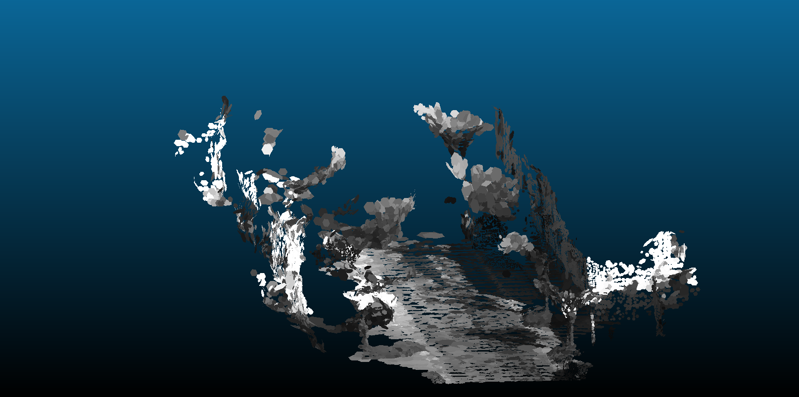
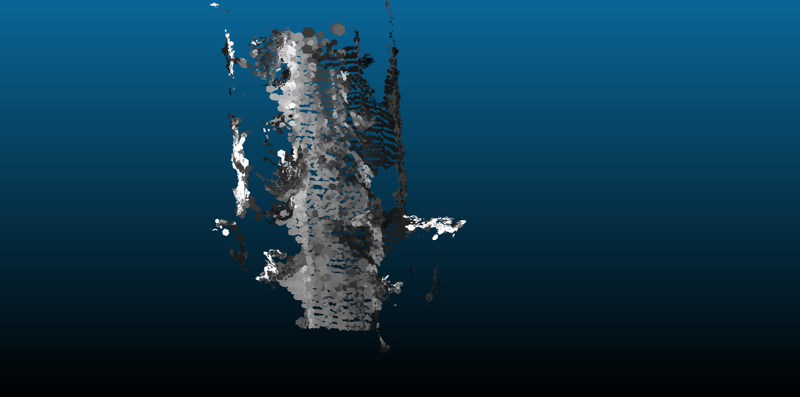
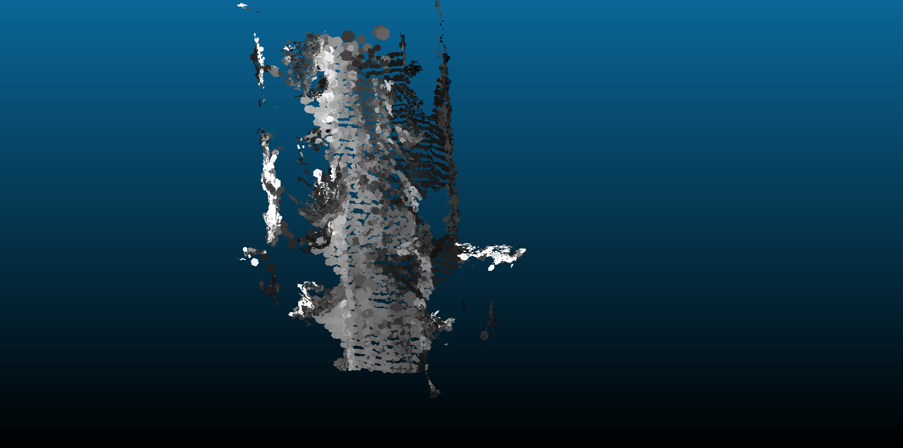
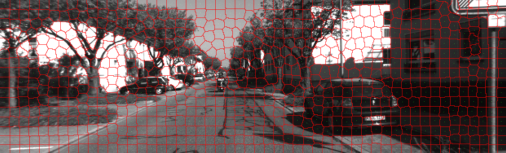

Mandy Xie, Shicong Ma, Gerry Chen
Dec 4, 2019
One of the fundamental tasks for robot autonomous navigation is to perceive and digitalize the surrounding 3D environment [1]. We replicate the results of [2] to produce semi-dense, surfel-based reconstruction using superpixels.
One of the fundamental tasks for robot autonomous navigation is to perceive and digitalize the surrounding 3D environment [1]. To be usable in mobile robot applications, the mapping system needs to fast and densely recover the environment in order to provide sufficient information for navigation.
Unlike other 3d reconstruction methods that reconstructs the environment as a 3D point cloud, we hope to extract surfels based on extracted superpixels from intensity and depth images and construct a surfel cloud. This approach is introduced by [2] which can greatly reduces the memory burden of mapping system when applied to large-scale missions. More importantly, outliers and noise from low-quality depth maps can be reduced based on extracted superpixels.
The goal of our project is to reproduce results of Wang et al’s, namely implementing superpixel extraction, surfel initialization, and surfel fusion to generate a surfel-based reconstruction given a camera poses from a sparse SLAM implementation. The input to our system is an RGB-D video stream with accompanying camera poses and the output is a surfel cloud map of the environment, similar to Figures 4b or 8 of the original paper [2].
The idea behind dense mapping is to first generate frame related poses, then reconstruct the dense map based on pre-generated poses and surfels.
Read pose information from the dataset / Use a sparse SLAM system (VINS [5]/ORB-SLAM2 [6]) to estimate camera poses
Run code from [7] directly to confirm functionality and set benchmark/expectations.
(Implementation) – Single frame Superpixels extraction from RGB-D images using a k-means approach adapted from SLIC [8] - IV.D section in [2]
(Implementation) – Single frame surfel generation based on extracted superpixels. - IV.E section in [2]
(Implementation) – Surfel fusion and Surfel Cloud update. - IV.G section in [2]
We have started with the kt3 sequence of the ICL-NIUM dataset [1]. Images and depth maps have been extracted and examples shown below.
| rgb image from ICL-NIUM dataset | depth image from ICL-NIUM dataset |
|---|---|
 |
 |
The code written for the paper was run to ensure that the results could be reproduced. Below are some results of running the code for dense reconstruction on images from the KITTI dataset [4]. We showed that it can indeed produce dense reconstructions.
 
 

We have completed single-frame superpixel generation. The results are shown below.


We follow the standard implementation as described in the paper:
The number of times that step 2 is repeated depends on the image. For example, the ICL-NIUM dataset image requires only 10 iterations or so to stabilize, but the KITTI dataset image requires roughly 25 to stabilize. One metric that can potentially be used in the future as a stopping criteria is the sum of distances traveled by the superpixels from one iteration to the next. The superpixel iteration is complete when they sufficiently small changes occur from one iteration to the next.
Surfels are modeled with the superpixels extracted from intensity and depth images in the following method as described in the paper:
For the surfel initialization, we transform each superpixel into a surfel according to the correspondence equations given in [2]. An example of a single frame with each superpixel processed in this manner is shown below.
To process additional frames, each new surfel from a superpixel in the frame to be added must first be checked amongst all existing surfels to see if it is similar enough to be fused. If not, then a new surfel is initialized. An example of a cloud consisting of a few frames containing fused surfels is shown below.
We can see that the reconstruction is much better filled in (denser) and also has better detail. For example, the filing cabinet achieves much better resolution when putting multiple frames together. This is partly because multiple surfels can occupy the same location in space if they have different normal directions.
We have now recreated the dense reconstruction surfel cloud results from [2] that we sought out to achieve.
A number of parameters can be tuned for surfel generation and a few will be discussed:
We then finish with a qualitative description of the resulting surfel clouds.
As mentioned earlier and shown in both the figure above and the figure below, the process of extracting superpixels is an iterative one based on k-means. This means that the number of iterations to run k-means affects how closely the superpixels will converge to the optimal superpixel assignments. The animated figures illustrate how the superpixel assignments change as more iterations are run. We found that, for the ICL-NIUM dataset, roughly 10 iterations were sufficient while roughly 25 were required for the KITTI dataset. We follow the lead of the reference paper [2] and consider the number of iterations a human-tuned parameter instead of setting a convergence stopping criterion.

 Figure: Superpixel extraction over multiple iterations
Figure: Superpixel extraction over multiple iterations
The number of frames to use to generate a surfel cloud significantly affects the result. This is because the pose estimate that we read in was not completely accurate, so errors accrue with more frames causing inconsistencies in the surfel cloud. At the same time, too few frames results in sparser clouds with more gaps. Shown below are examples of surfel clouds generated with 1, 3, 25, and 50 frames.
The generated surfels result varies when we change the parameters, such as the size of superpixels and the size of surfels. The number of superpixels in our implementation does not change during the k-means process so the size of initialized superpixels affects the general size scale of the final superpixels as well. Similarly, surfel size is dependent upon superpixel size because surfels are initialized from superpixels, so the superpixel initialization density also affects the final sizes of the surfels. Shown below are examples of surfel clouds generated with initialization superpixel sizes of 50x50, 25x25, 12x12, and 9x9. We see that too large superpixels lose detail while too small superpixels become sparse.
Some surfels are poorly conditioned due to factors such as oblique viewpoint, small superpixel parent, only being visible in few frames, distance to camera, and other factors. Several checks exist in our code to eliminate obvious outliers. One example is removing surfels which don’t appear in many frames. Surfels which appear in multiple frames get “fused” and we keep track of how many times a given surfel has been fused. The animation below compares a raw surfel cloud and one which removes surfels fused less than 3 times. We notice that including these “outlier” surfels generates a more complete cloud, but at the expense of extra noise. For example, there is a cluster of surfels to the right of the filing cabinet which are not oriented correctly.

The superpixel-segmented images below from the KITTI [4] dataset demonstrate that the superpixels are indeed segmenting properly as they tend to “hug” similarly colored/depthed regions.
 
Converting the superpixels into surfels appears correct based on:
We can observe these qualitatively from the rgb image and example surfel cloud below.
We successfully recreated the results of [2] by creating a surfel cloud given RGBD images and camera poses. Furthermore, we investigated and reported the effects of various parameters on the resulting surfel clouds and discussed qualitative results from our reconstructions.
During this project, several difficulties were faces, such as
Future directions include
[1] A. Handa, T. Whelan, J. McDonald, and A. J. Davison, “A benchmark for rgb-d visual odometry, 3D reconstruction and slam,” in 2014 ieee international conference on robotics and automation (icra), 2014, pp. 1524–1531.
[2] K. Wang, F. Gao, and S. Shen, “Real-time scalable dense surfel mapping,” in 2019 international conference on robotics and automation (icra), 2019, pp. 6919–6925.
[3] J. Sturm, N. Engelhard, F. Endres, W. Burgard, and D. Cremers, “A benchmark for the evaluation of rgb-d slam systems,” in Proc. Of the international conference on intelligent robot systems (iros), 2012.
[4] M. Menze and A. Geiger, “Object scene flow for autonomous vehicles,” in Conference on computer vision and pattern recognition (cvpr), 2015.
[5] T. Qin, P. Li, and S. Shen, “Vins-mono: A robust and versatile monocular visual-inertial state estimator,” IEEE Transactions on Robotics, vol. 34, no. 4, pp. 1004–1020, 2018.
[6] R. Mur-Artal and J. D. Tardós, “Orb-slam2: An open-source slam system for monocular, stereo, and rgb-d cameras,” IEEE Transactions on Robotics, vol. 33, no. 5, pp. 1255–1262, 2017.
[7] https://github.com/HKUST-Aerial-Robotics/DenseSurfelMapping.
[8] R. Achanta, A. Shaji, K. Smith, A. Lucchi, P. Fua, and S. Süsstrunk, “SLIC superpixels compared to state-of-the-art superpixel methods,” IEEE transactions on pattern analysis and machine intelligence, vol. 34, no. 11, pp. 2274–2282, 2012.